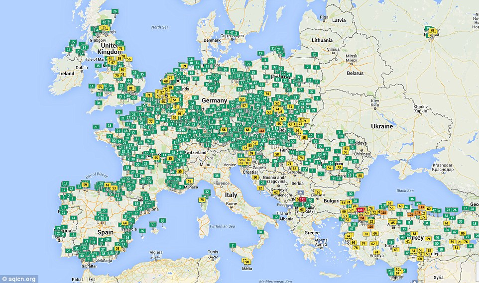
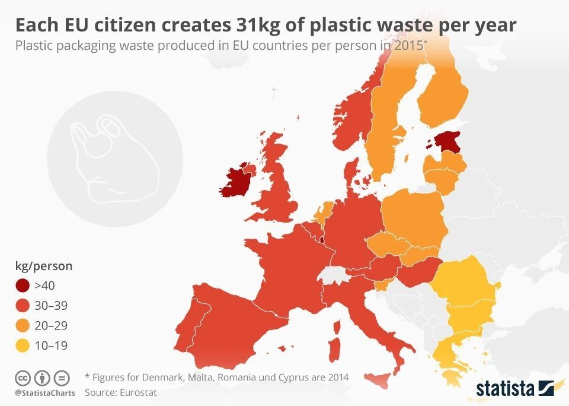

Digital Visualisation Group 8
INVISIBLE CITIES
to be filled in for our mini project.
Environmental Pollution
text to be added
Air Pollution
Text to Added..

Light Pollution
Text to Added..
Waste Pollution
Text to Added..

Noise Pollution
Text to Added..
Environmental Pollution Impacts and Mitigations
text to be added